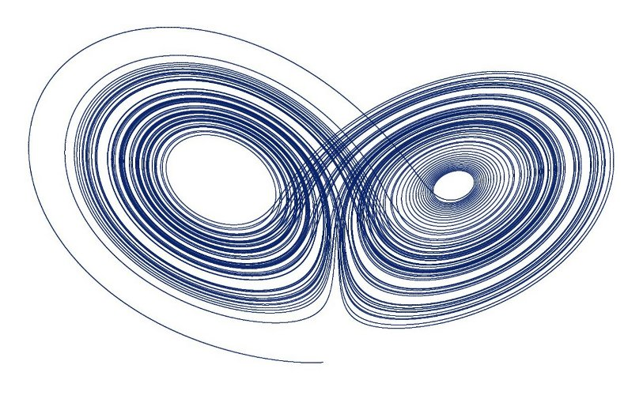
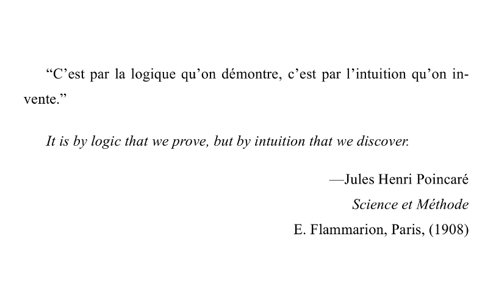
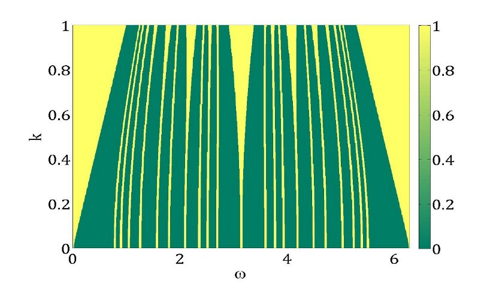
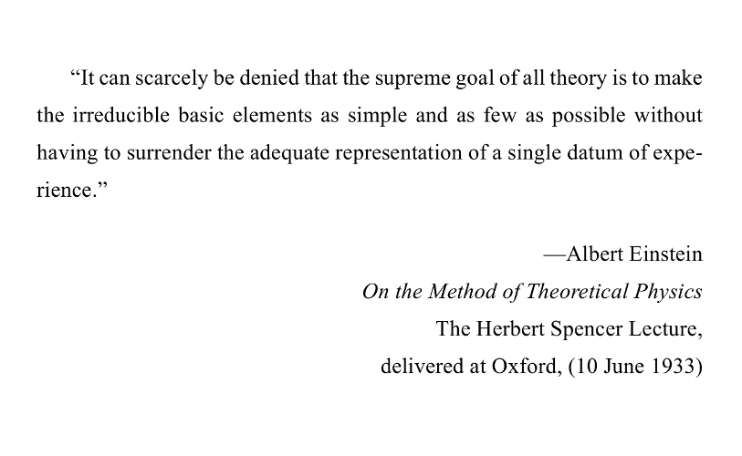
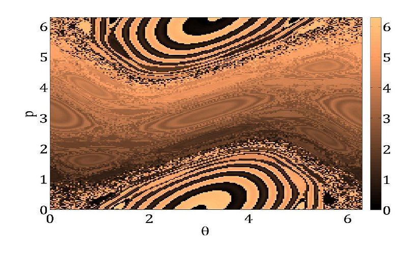
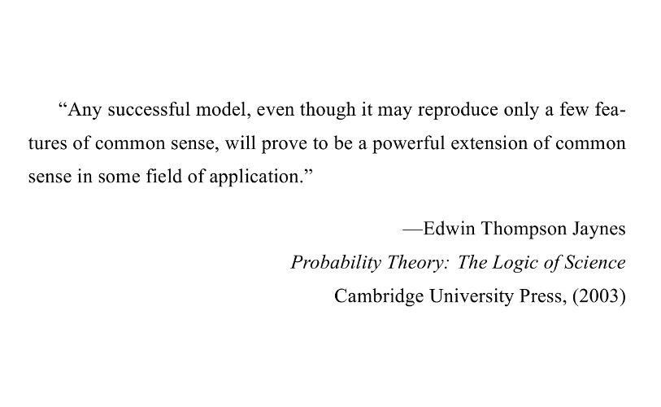
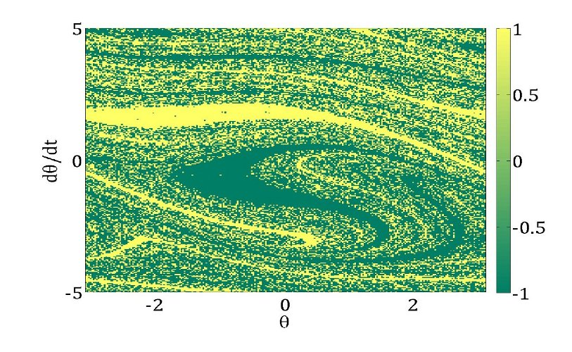

Interested In... nonlinear dynamics, reading, interesting conversations  Lorenz attractor  favorite quotes: I  Arnold tongues for circle map  favorite quotes: II  Chirikov standard map  favorite quotes: III  fractal basin boundary of a forced damped pendulum ‹ ›